Sistemas de control de versiones
Una breve introduccion
En la actualidad, la industria del software juega un papel cada vez más importante para la economı́a global. El software ha transformado los procesos de control de la mayorı́a de los servicios de los cuales dependemos. Asi tambien cada dı́a surgen más y mejores tecnologı́as y con ellas novedosas aplicaciones, generando nuevos retos para los implicados en los procesos de software.Tambien uno de los retos a los que se enfrentan los desarrolladores de software es generar productos eficientes y de calidad sin sacrificar tiempo o costos. Este objetivo sólo se alcanza si los actores involucrados en tal proceso pueden disponer de toda la información relacionada con el proyecto
Es asi como nacen los famosos Sistemas de control de versiones (SVC), los cuales nos ayudan al proceso de desarrollo del software en forma colaborativa.
¿Que son los Sistemas de control de versiones y por que amarlos?
La vida de un desarrollador de software se encuentra dividido por un gran hecho: el antes y el después de conocer los sistemas de control de versiones.
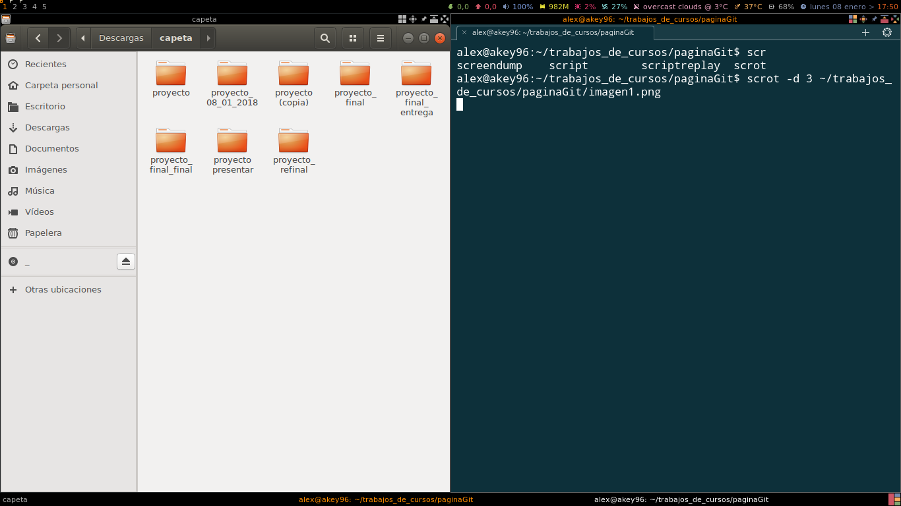
Es muy probable que en algún momento de nuestras vidas nuestra carpeta de documentos luciera como la de la imagen y nos haya tocado recurrir a tener muchas copias de nuestros proyectos, copias que requerían de toda nuestra creatividad para nombrarlas con etiquetas super útiles para poder reconocer cuál era nuestro ansiado “proyecto final”. Tiempo después por algún accidente del destino conocemos los sistemas de control de versiones y no podemos negarlo, nuestras vidas cambian y entramos a una era donde todo es mucho más bonito: el después.
Si, si muy bonito todo pero… ¿Qué es control de versiones?
El control de versiones es un sistema que registra los cambios realizados sobre un archivo o conjunto de archivos a lo largo del tiempo de tal manera que sea posible recuperar versiones especificas más adelante. Esto representa una importante ventaja para los desarrolladores, ya que estas versiones pueden estar disponibles para más participantes distribuidos geográficamente, propiciando que los actores puedan contribuir en forma organizada, enriqueciendo y agilizando los procesos de desarrollo, sin sacrificar la calidad o elevar los costos
ejemplo del uso de commits(coldback)
Los sistemas de control de versiones han ido evolucionando a lo largo del tiempo y podemos clasificarlos en tres tipos: Sistemas de Control de Versiones Locales, Centralizados y Distribuidos.
Sistemas de Control de Versiones Locales
Los sistemas de control de versiones locales en vez de mantener las versiones como archivos independientes, los almacenaban en una base de datos. Cuando era necesario revisar una versión anterior del proyecto se usaba el sistema de control de versiones en vez de acceder directamente al archivo, de esta manera en cualquier momento solo se tenia una copia del proyecto, eliminando la posibilidad de confundir o eliminar versiones.
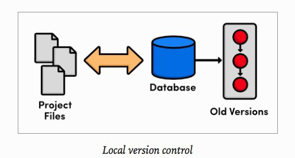
Funcionamiento de un SCV local
Funcionamiento de un SCV local
En este punto el control de versiones se llevaba a cabo en el computador de cada uno de los desarrolladores y no existía una manera eficiente de compartir el código entre ellos. Una de las herramientas de control de versiones más popular fue un sistema llamado rcs, que todavı́a podemos encontrar en muchos de los ordenadores actuales.
Hasta el famoso sistema operativo Mac OS X incluye el comando rcs cuando instalas las herramientas de desarrollo. Esta herramienta funciona básicamente guardando conjuntos de parches (es decir, las diferencias entre archivos) de una versión a otra en un formato especial en disco; puede entonces recrear cómo era un archivo en cualquier momento sumando los distintos parches.
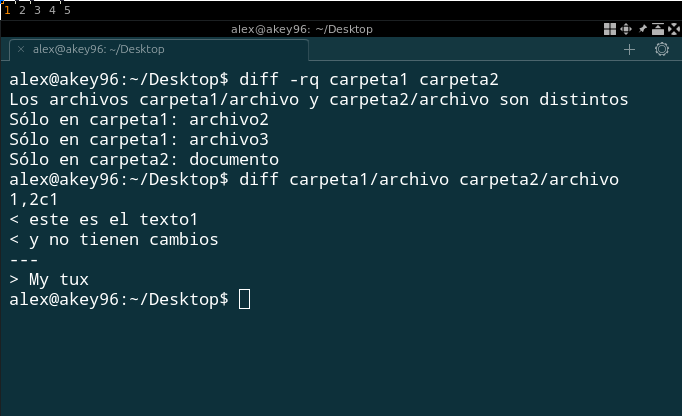
Uso del comando Diff que compara archivos generando
direfencias entre estos
Uso del comando Diff que compara archivos generando
direfencias entre estos
Sistemas de Control de Versiones Centralizados
Para facilitar la colaboración de múltiples desarrolladores en un solo proyecto los sistemas de control de versiones evolucionaron: en vez de almacenar los cambios y versiones en el disco duro de los desarrolladores, estos se almacenaban en un servidor. Sin embargo, aunque el avance frente a los sistemas de control de versiones locales fue enorme, los sistemas centralizados trajeron consigo nuevos retos: ¿Cómo trabajaban múltiples usuarios en un mismo archivo al mismo tiempo?
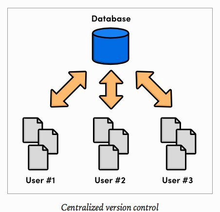
Funcionamiento de un SCV centralizado
Funcionamiento de un SCV centralizado
Los sistemas de control de versiones centralizados abordaron este problema impidiendo que los usuarios invalidaran el trabajo de los demás. Si dos personas editaban el mismo archivo y se presentaba un conflicto alguien debía solucionar este problema de manera manual y el desarrollo no podía continuar hasta que todos los conflictos fueran resueltos y puestos a disposición del resto del equipo. Esta solución funcionó en proyectos que tenían relativamente pocas actualizaciones y por ende pocos conflictos pero resulto muy engorroso para proyectos con docenas de contribuyentes activos que realizaban actualizaciones a diario.
Este tipo de SCV requiere tener conexión de red para realizar las actualizaciones del servidor central. Las principales aplicaciones de tipo SCV centralizado son el CVS y Subversion
Concurrent Version System (CVS)
.El CVS (CVS, 2012 ) fue por mucho tiempo la principal herramienta para el control de versiones en ambientes Open-Source. Mediante su operación en red ha soportado que múltiples desarrolladores, dispersos geográficamente, puedan compartir sus aportaciones favoreciendo el trabajo colaborativo a través de una arquitectura cliente servidor. De acuerdo con Lasa (Lasa,2010) los CVS se utilizan para gestionar los cambios al código fuente del proyecto, de modo que varios desarrolladores puedan trabajar de manera coordinada sobre el mismo código fuente. Pero estos sistemas no se limitan al código fuente, también se pueden usar para todo tipo de documentos o archivos que estén expuestos a sufrir cambios y se requiere conservar sus diferentes versiones, o en situaciones donde varias personas trabajen en un mismo proyecto (Vesperman,2007).
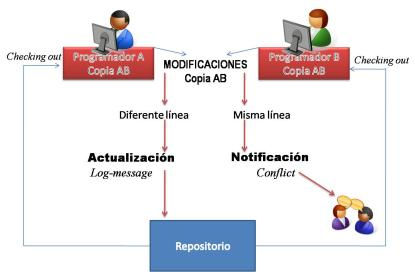
Proceso de actualización de un repositorio utilizando CVS
Proceso de actualización de un repositorio utilizando CVS
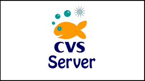
Subversion.
El sistema Subversion (Apache Subversion, 2012 ) es un SCV de código abierto (open-source), que maneja los cambios realizados tanto en archivos como en directorios; esto permite recuperar versiones anteriores de sus datos o examinar la historia de cómo cambiaron sus datos. Por otro lado, ofrece una estructura de árbol de directorios en un repositorio central; el repositorio es como un servidor de archivos excepto que recuerda todos los cambios realizados a sus archivos y directorios. Subversion permite conservar distintas versiones de los directorios, caracterı́stica que no soporta su antecesor CVS (Lasa,2010). Además Subversion soluciona la mayorı́a de las deficiencias presentadas por CVS. Subversion permite al usuario obtener del repositorio una copia del proyecto, con la cual los desarrolladores trabajan en paralelo realizado sus cambios, para finalmente integrar sus copias en una versión final (F. Solsona,2007). Subversion utiliza un modelo copiar-modificar-fusionar (copy-modify-merge) como alternativa para evitar el bloqueo de archivos en el proceso de actualización. En este modelo cada usuario se conecta al repositorio del proyecto y crea una copia personal (copia espejo de los archivos y directorios contenidos en el repositorio) en la cual trabajará. Después los usuarios pueden trabajar simultáneamente modificando sus copias privadas y personales. Finalmente las copias privadas son fusionadas en una nueva versión. Subversion facilita el proceso de fusión de las diferentes copias pero el desarrollador es el responsable de que se realice correctamente esta parte del proceso (B. Collins, Fitzpatrick, C.M. Pilato, 2004 ). La forma de operar de Subversion mejora la productividad debido a que los archivos están siempre disponibles, al no bloquearlos cuando se pretendan actualizar por varios desarrolladores al mismo tiempo.
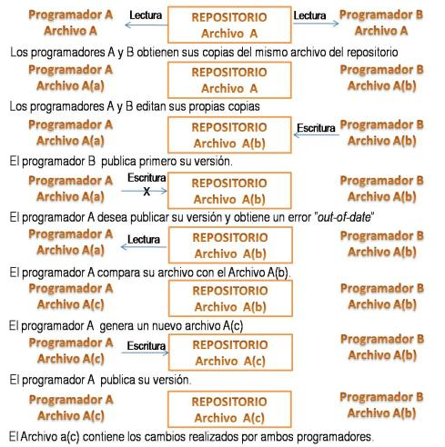
Proceso de actualización de los archivos en un repositorio utilizando
Subversion
Proceso de actualización de los archivos en un repositorio utilizando
Subversion
Subversion ofrece importantes ventajas con respecto a su antecesor CVS (B.Collins, Fitzpatrick, C.M. Pilato, 2004 ):
• Versionado de directorios. CVS sólo controla la historia de los archivos en forma individual. En cambio, Subversion implementa un sistema de archivos ”virtual”de versiones que sigue los cambios de la estructura de directorios. Tanto a los directorios como a los archivos se les asigna una versión.
• Control de historial. Dado que CVS está limitado al control de versiones de archivos, no permite copiarlos y/o renombrarlos. Además, CVS no puede reemplazar un archivo versionado con otro que lleve el mismo nombre, sin que el nuevo archivo herede el historial del anterior, que tal vez sea completamente distinto al nuevo archivo. En cambio, con Subversion, se puede agregar, eliminar, copiar y renombrar archivos y directorios. Adicionalmente, cada archivo nuevo que es añadido inicia con un historial limpio o vacı́o.
• Atomicidad. Un conjunto de modificaciones sólo puede integrarse al repositorio si está totalmente completo. Esto permite a los programadores realizar cambios como unidades lógicas, lo cual evita los problemas que pueden ocurrir cuando sólo una parte de las modificaciones son enviadas al repositorio. El término “atómico” implica la indivisibilidad e irreductibilidad del proceso, ya que éste debe realizarse en su totalidad o de lo contrario no realizarse.
• Versión en los Metadatos. Cada directorio y archivo tienen un conjunto de propiedades asociadas, las cuales se pueden crear y almacenar arbitrariamente.
• Conexión en diferentes capas de red. Los accesos al repositorio se pueden implementar mediante diferentes mecanismos de red. Subversion puede conectarse a un servidor Apache usando el protocolo HTTP. Esto dota a Subversion de una ventaja en estabilidad e interoperabilidad, además de las caracterı́sticas que provee el servidor Apache, tales como autenticación, autorización y compresión de datos. También una versión ligera del servidor de Subversion está disponible, la cual utiliza un protocolo propio que puede encapsularse sobre el protocolo SSH.
• Manejo de datos consistente. Subversion identifica las diferencias de un archivo usando un algoritmo de diferenciación binario, que funciona exactamente igual en archivos de texto (legibles) y archivos binarios (ilegibles por los humanos). Ambos tipos de archivos se almacenan comprimidos en el repositorio y las diferencias se transmiten en ambas direcciones a través de la red.
Entre otro tenemos a Team Foundation Server. y muchos otros mas
Sistemas de Control de Versiones Distribuidos
La siguiente generación de sistemas de control de versiones se alejo de la idea de un solo repositorio centralizado y optó por darle a cada desarrollador una copia local de todo el proyecto, de esta manera se construyo una red distribuida de repositorios, en la que cada desarrollador podía trabajar de manera aislada pero teniendo un mecanismo de resolución de conflictos mucho más elegante que un su versión anterior. Al no existir un repositorio central, cada desarrollador puede trabajar a su propio ritmo, almacenar los cambios a nivel local y mezclar los conflictos que se presenten solo cuando se requiera. Cómo cada usuario tiene una copia completa del proyecto el riesgo por una caída del servidor, un repositorio dañado o cualquier otro tipo de perdida de datos es mucho menor que en cualquiera de sus predecesores.
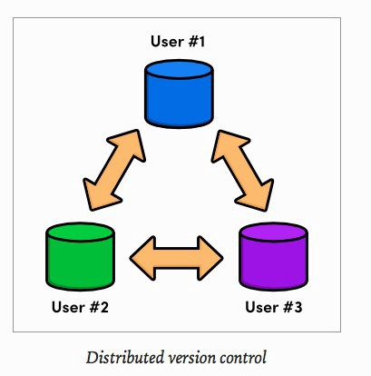
Funcionamiento de un SCV distribuido
Funcionamiento de un SCV distribuido
Git.
Es uno de los SCV distribuidos más populares, inicialmente desarrollado para Linux. Git permite a varios programadores trabajar paralelamente con sus propias copias de trabajo obtenidas de un repositorio, como lo efectúan todos los SCV distribuidos. Git está compuesto de una estructura de tres secciones (D. Otero. ,2011)
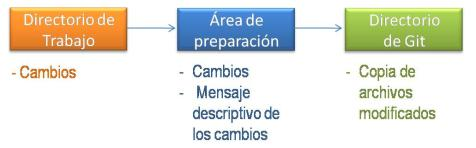
Estructura de trabajo de Git
Estructura de trabajo de Git
• Directorio de Git. Es donde se guardan los objetos que mantienen el historial con los cambios que se han producido en el proyecto.
• Directorio de trabajo. Contiene los archivos de la versión actual del proyecto sobre los que se realizan los cambios.
• Área de preparación o ı́ndice. Es un archivo que incluye la información de los cambios que se van a enviar en la próxima confirmación.
Git utiliza ramas favoreciendo el trabajo paralelo sobre un mismo proyecto. En el momento de iniciar un repositorio se genera una rama maestra, de donde se extienden nuevas ramas que incluirán todo el historial del proyecto. Cuando se han realizado los cambios en una rama, permite que ésta se combine con otras ramas, uniéndose a la rama maestra (merge), integrando historiales y archivos de las ramas participantes; es entonces cuando se genera una nueva versión (D. Otero. ,2011).
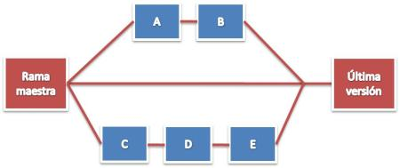
Funcionamiento del trabajo en ramas de Git
Funcionamiento del trabajo en ramas de Git
El proceso de actualización de los archivos contenidos en un repositorio y la posterior generación de una nueva versión utilizando Git es el siguiente: cada desarrollador debe generar una copia del repositorio original en su computadora, creando un repositorio local. Este repositorio local contiene toda la información del historial de cambios y los archivos del directorio de trabajo. En esta etapa el desarrollador puede empezar a trabajar en el repositorio Git local, creando y modificando los archivos de acuerdo a sus requerimientos. Para crear y almacenar una nueva versión el procedimiento es el siguiente:
primeramente se debe consultar el estado del repositorio, con lo cual se obtiene un listado de los archivos que han sido modificados.
Enseguida, se seleccionan los que se almacenarán en la nueva versión, esto es, los archivos que contienen cambios y se quieren incluir en la nueva versión.
Posteriormente, se detallan los cambios que se han realizado en los archivos, esto servirá a los desarrolladores para identificar las versiones.
Al finalizar estos pasos, Git almacenará en la sección ”área de preparación" una nueva copia en el historial del proyecto con todos los cambios incluidos.
Posteriormente, el desarrollador debe confirmar los cambios, con lo cual Git almacenará una nueva versión del proyecto en la sección “directorio de git" conteniendo los archivos que sufrieron cambios y, de los archivos que no fueron modificados solo guarda el enlace al archivo anterior, que ya se encontraba en el repositorio del proyecto.
En esta parte del proceso del funcionamiento de Git, los cambios y actualización de versión solo se han realizado en el repositorio local del desarrollador.
Enseguida se debe realizar un proceso de fusión (merge), el cual consiste en combinar una o varias ramas de un proyecto en un repositorio local al repositorio origen o al repositorio de otros desarrolladores.
La acción de merge realiza una combinación de los historiales y archivos de las dos ramas implicadas. Git detecta los cambios que existen en las dos ramas, combinándolas y generando una única versión con los cambios realizados en ambas ramas.
Al efectuar el merge se cambian todos los archivos en la rama del proyecto destino, generándose una nueva versión.

GITHUB
GitHub es una plataforma de desarrollo colaborativo de software para alojar proyectos utilizando el sistema de control de versiones Git. El código se almacena de forma pública, aunque también se puede hacer de forma privada, creando una cuenta de pago.
¿Para que sirve?
GitHub aloja tu repositorio de código y te brinda herramientas muy útiles para el trabajo en equipo, dentro de un proyecto. Además de eso, puedes contribuir a mejorar el software de los demás. Para poder alcanzar esta meta, GitHub provee de funcionalidades para hacer un fork y solicitar pulls. Realizar un fork es simplemente clonar un repositorio ajeno (genera una copia en tu cuenta), para eliminar algún bug o modificar cosas de él. Una vez realizadas tus modificaciones puedes enviar un pull al dueño del proyecto. Éste podrá analizar los cambios que has realizado fácilmente, y si considera interesante tu contribución, adjuntarlo con el repositorio original.¿Qué herramientas proporciona?
En la actualidad, GitHub es mucho más que un servicio de alojamiento de código. Además de éste, se ofrecen varias herramientas útiles para el trabajo en equipo. Entre ellas, caben destacar:Una wiki para el mantenimiento de las distintas versiones de las páginas.
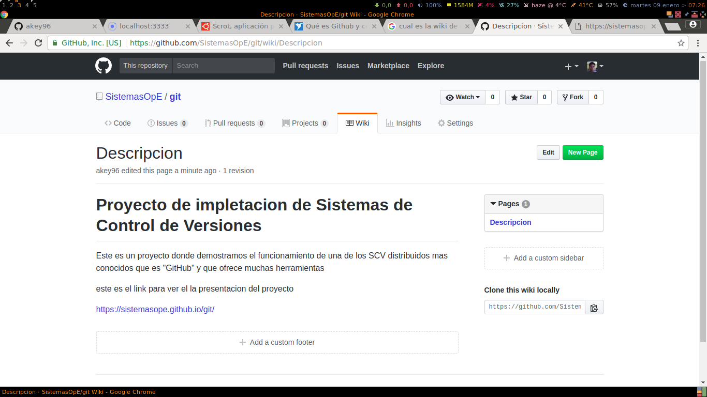
wiki de un proyecto en GitHub
wiki de un proyecto en GitHub
Un sistema de seguimiento de problemas que permiten a los miembros de tu equipo detallar un problema con tu software o una sugerencia que deseen hacer.
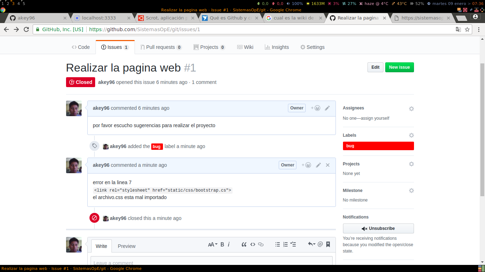
isus que nos ayudan a debatir sobre puntos del proyecto
isus que nos ayudan a debatir sobre puntos del proyecto
Una herramienta de revisión de código, donde se pueden añadir anotaciones en cualquier punto de un fichero y debatir sobre determinados cambios realizados en un commit específico.
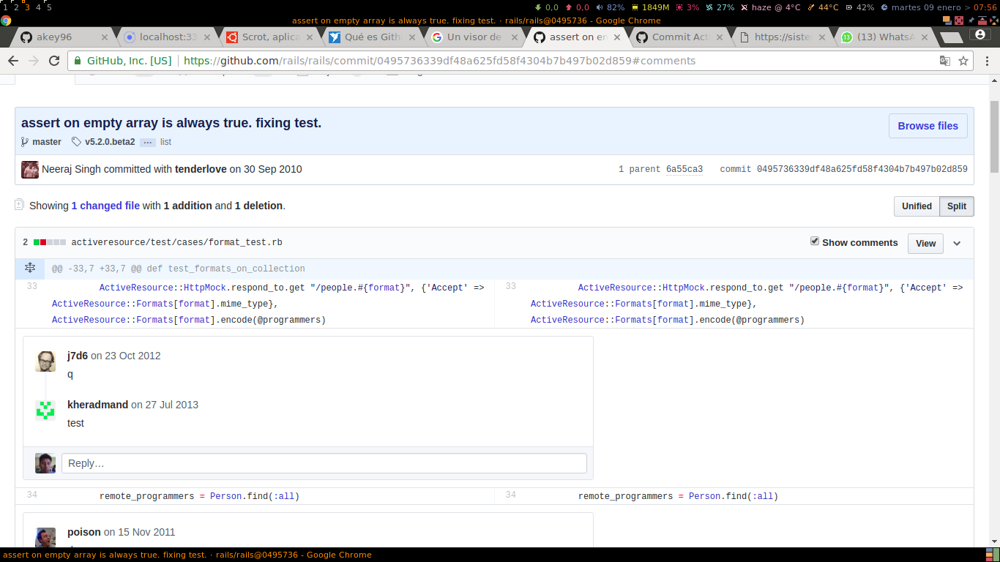
herramienta para poder agregar comentarios o debatir
sobre puntos en el codigo
herramienta para poder agregar comentarios o debatir
sobre puntos en el codigo
Gráfico para ver cómo los desarrolladores trabajan en sus repositorios y bifurcaciones del proyecto
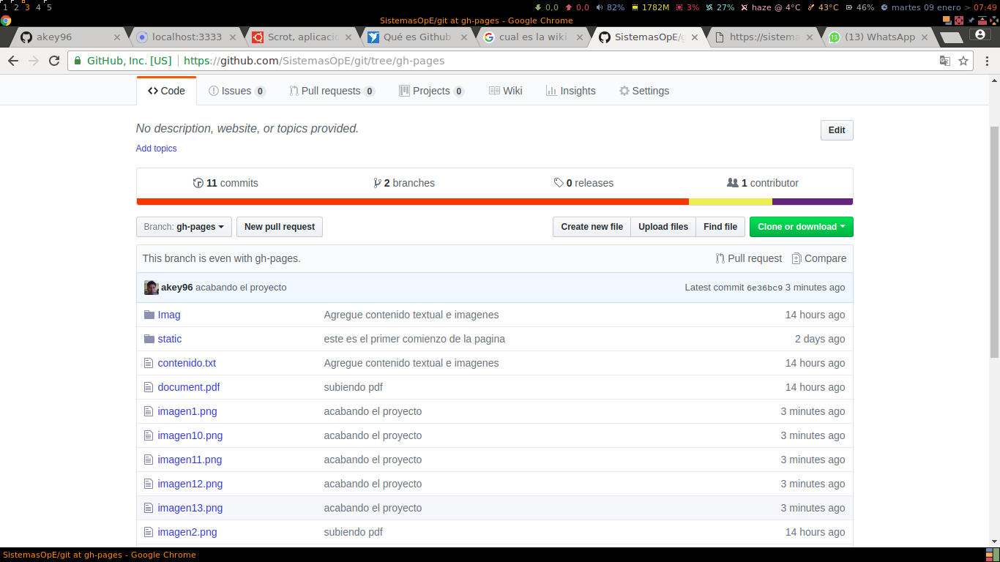
herramienta para visualizar archivos del proyecto
herramienta para visualizar archivos del proyecto
Un visor de ramas donde se pueden comparar los progresos realizados en las distintas ramas de nuestro repositorio.(Vesperman,2007)
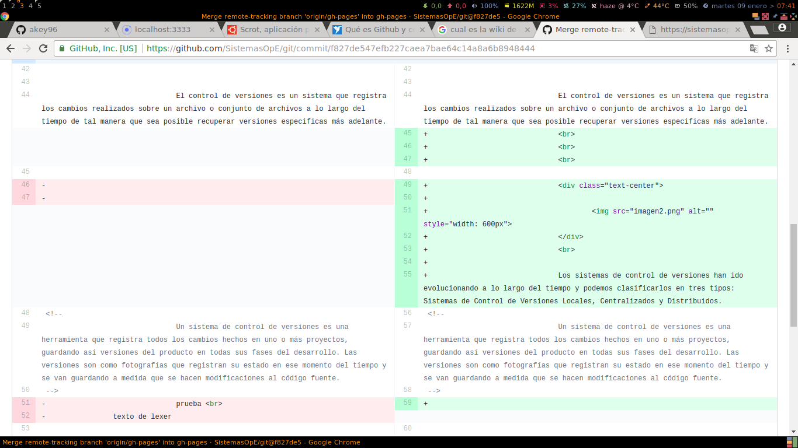
herramientas para poder visualizar cambios en una rama
herramientas para poder visualizar cambios en una rama
Funcionalidades como si se tratase de una red social, por ejemplo: seguidores;
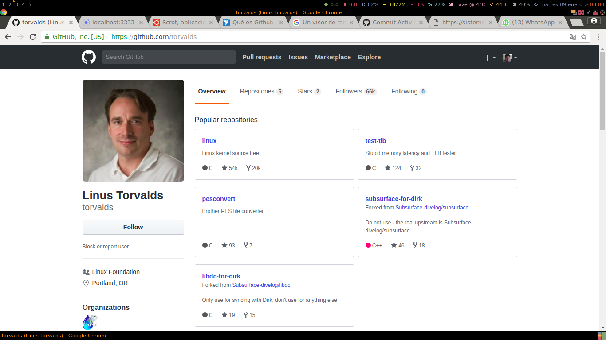
perfil de un usuario GitHub
perfil de un usuario GitHub
Blibliografia
Vesperman J. Vesperman. “Essential CVS”. O’Really Media Inc, 2007.
M. Lasa. ”Desarrollo de aplicaciones en entornos de software libre”. Tesis de Maestrı́a, Universitat Oberta de Catalunya, España, 2010
B. O’Sullivan. “Mercurial: The Definitive Guide”. O’Really Media Inc, 2009.
F. Solsona & E. Viso. “Manual de supervivencia en Linux”. Universidad Autónoma de México, Facultad de Ciencias, 2007.
D. Otero. ”Desarrollo de una aplicación Web para control de versiones de software”. Tesis Doctoral, Universidad Carlos III de Madrid, España, 2011.
B. Alwis & J. Sillito. ”Why are Software Projects Moving from Centralized to Decentralized Version Control Systems?ÏCSE2009. pp. 36-39, 2009.
Concurrent Version System. Online [Feb. 2012].
Apache Subversion. Online [Jan. 2012].
B. Collins-Sussman; B. W. Fitzpatrick & C.M. Pilato. “Version Control with Subversion”. 2004.
Rosa M. Sistemas de Control de Versiones. UNIVERSIDAD DE CÁDIZ, 2008
Freelancer. Empresa de desarrollo de software.
https://www.freelancer.es/community/articles/github-como-puede-ayudar
A Medium corporation
https://medium.com/@jointdeveloper/sistemas-de-control-de-versiones qu %C3 %A9-son-y-por-qu %C3 %A9-amarlos-24b6957e716e
Git Documentacion.
https://git-scm.com/book/es/v1/Empezando-Acerca-del-control-de-versiones
SildeShare
https://es.slideshare.net/juliocabrejos1/repositorios-definicin-caractersticas-y-ejemplos
wikipedia. Enciclopedia libre
GitHub https://es.wikipedia.org/wiki/GitHub
Diff https://es.wikipedia.org/wiki/Diff
RCS https://es.wikipedia.org/wiki/Revision Control System
Version https://es.wikipedia.org/wiki/Versi %C3 %B3n de software